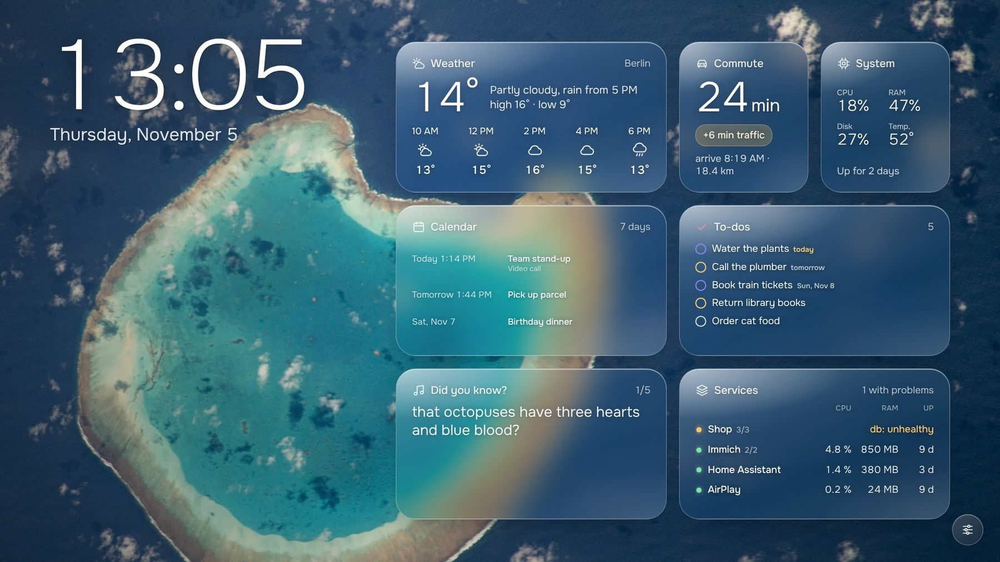
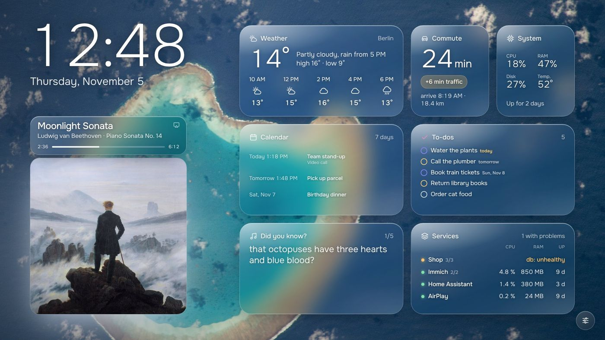
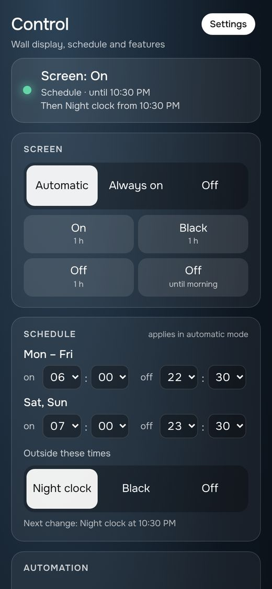
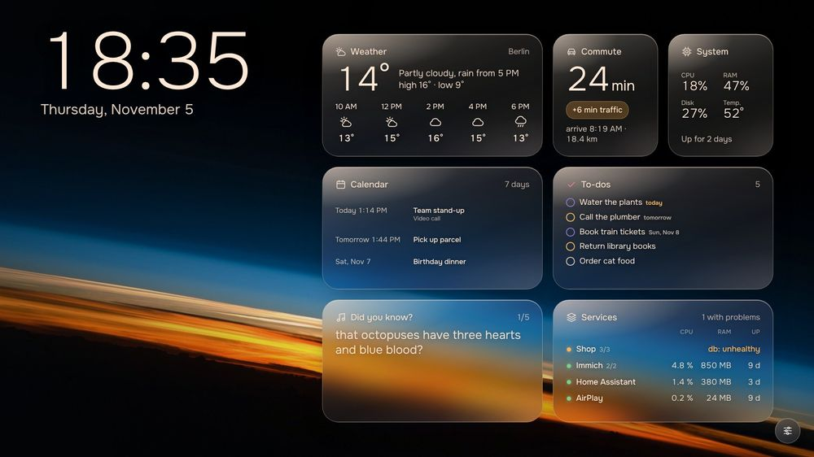
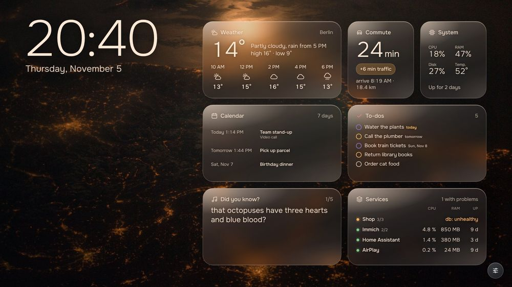

An old laptop.
A new wall.
Reframe turns the screen of a laptop from the drawer into a calm wall dashboard. It runs in Docker and as an umbrelOS app.

Sample data. Background: NASA astronaut photograph, public domain.
Everything on one screen.
Open the page, tell it where you live, connect a calendar. That is the whole setup.
A calm wall display
The scene follows the sun: morning, day, evening and late each have their own light. At night it dims to a clock, or goes off, on a schedule.
Looks after itself
Brightness follows the room, the screen sleeps on a schedule, a tap wakes it, and it starts again after a power cut.
Your own video
Put your clips in a folder and they play behind the tiles by time of day. Without clips you get slowly drifting colour.
Set up in the browser
No config files. English and German built in. Your phone is the remote control.


Play something to the AirPlay speaker “Reframe” and the wall shows the cover and progress. The control center runs on any phone.


The tiles.
Drag them around, hide what you do not need. Writing your own takes two files.
- Weather no account needed
- Calendar any iCal link
- To-dos tick off on the wall or phone
- System CPU, memory, disk, temperature
- Services your containers, problems first
- Commute drive time with traffic
- Wikipedia on this day, article of the day
- Home Home Assistant entities
- Photos Immich library numbers
- Music AirPlay cover and progress
Three ways to run it.
Docker is all you need. The kiosk on the laptop's own display is Linux only.
In a browser
Any machine with Docker. Open the page on a tablet, a TV or a phone.
git clone https://github.com/PaulWeber-co/reframe cd reframe docker compose up -d
On the laptop's screen
A Linux laptop without a desktop session. No privileged container.
docker compose \ --profile kiosk up -d
On umbrelOS
Add the community store, then install Reframe or Reframe Display.
https://github.com/ PaulWeber-co/reframe
Details, hardware notes and what has been tested: README · Hardware · umbrelOS